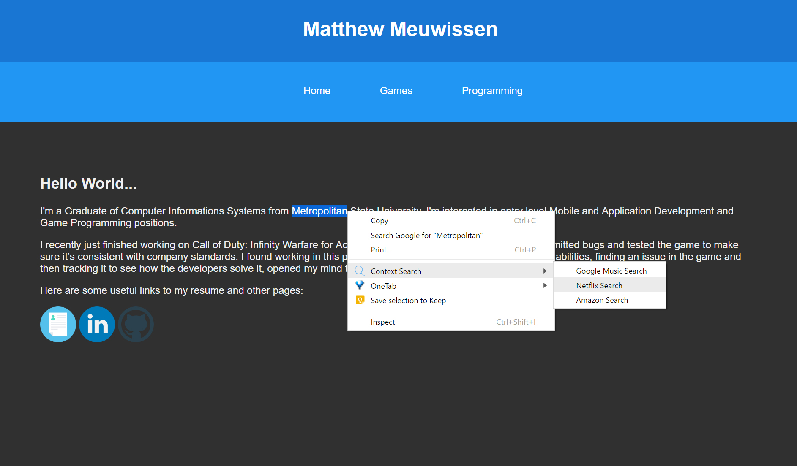
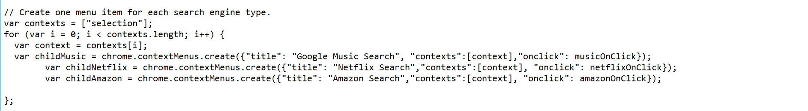
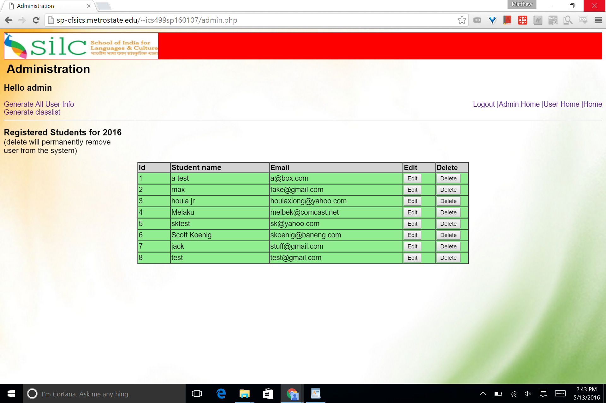

I utilize a variety of languages and technical skills to fulfill requirements and resolve tasks ranging from server side php and SQL code, application based java, c#, or c++, and even front end html, I have the ability and flexibility to get jobs done.
Projects:
Context Search Chrome Extension
I really like the feature in google chrome that allows the user to search for a highlighted word in the google search engine, this is called a context search. I decided it would be cool to be able to search media sites that I use frequently such as Netflix and Google Music for the songs or movies I read about online. There are a lot of extensions that I can use to do this but I decided making it myself would be more lightweight, the results are below

In the picture below is the script to search a highlighted word.
I learned that if I try to make more than one context menu item at once chrome will collapse them into one menu item, so I had to write the code below so different search engines will be submenus of the one context menu item.

Java Thread Hand-off:
-Learned the latest strategies for thread-safe programing
-Developed secure way of passing data in a mutually exclusive way
-Employed the latest Java multi threaded tools

Student Registration Website for SILC:
Earned the position as team lead for the Capstone Project at Metropolitan State University and coordinated an agile development cycle
-Redesigned a responsive, student course registration website, estimated to have 300 registered users
-Fulfilled clients requirements for session privileges and functionality for different users
-Interacted with robust SQL database to keep important user information accurate and secure
Yoga Website:
-Employed the abilities of a diverse programming team for a project at Metropolitan State University
-Engineered an original yoga store website build utilizing agile methods
-Aggressively tested advanced use cases and fixed security flaws, minimizing security vulnerabilities
-Focused on accessible functionality and straightforward navigation for all visitors